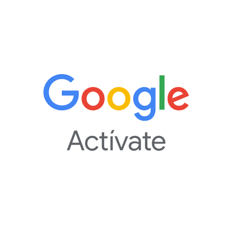

Webinar: Introduction to Bionic Androids & AI
Introducción a los androides biónicos y su integración con inteligencia artificial.
Ver certificado ↗Certificaciones, formación complementaria y reconocimientos obtenidos durante mi recorrido académico.
Introducción a los androides biónicos y su integración con inteligencia artificial.
Ver certificado ↗Formación en diseño de arquitecturas eficientes, seguras, tolerantes a fallos y escalables en AWS.
Ver certificado ↗
Reconocimiento por creatividad, colaboración y contribuciones a soluciones de software para sostenibilidad e innovación ecológica estuarina.
Ver certificado ↗Formación en ingesta, almacenamiento, procesamiento, análisis y modelado seguro de datos para pipelines analíticos.
Ver certificado ↗
Comercio web, logística, distribución, publicidad digital, analítica móvil y optimización en motores de búsqueda.
Ver certificado ↗Gestión del tiempo, planificación estratégica, generación de ideas, trabajo colaborativo y marca personal.
Ver certificado ↗
Tercer lugar en Programación durante el encuentro 593 Challenge, por el desarrollo de la plataforma Skillful.
Ver certificado ↗